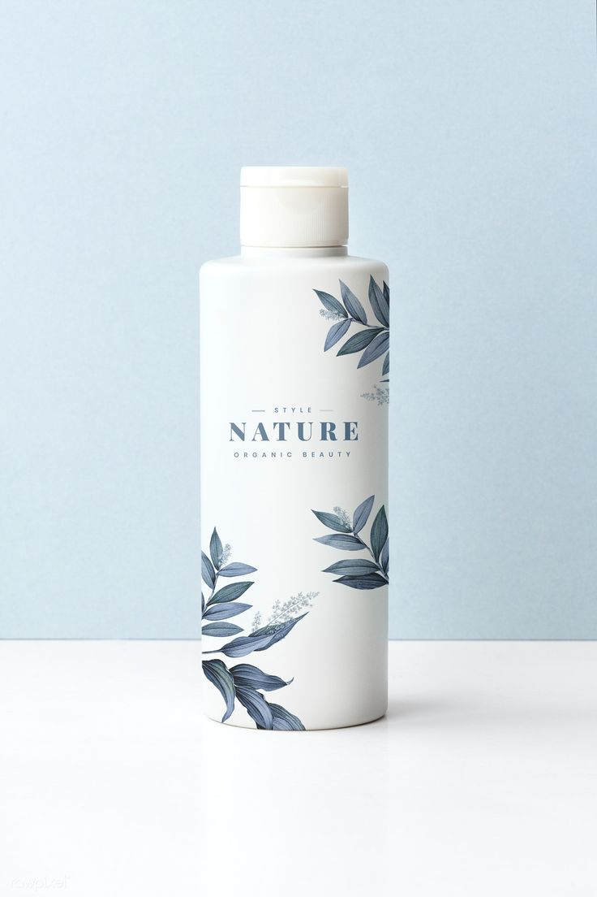
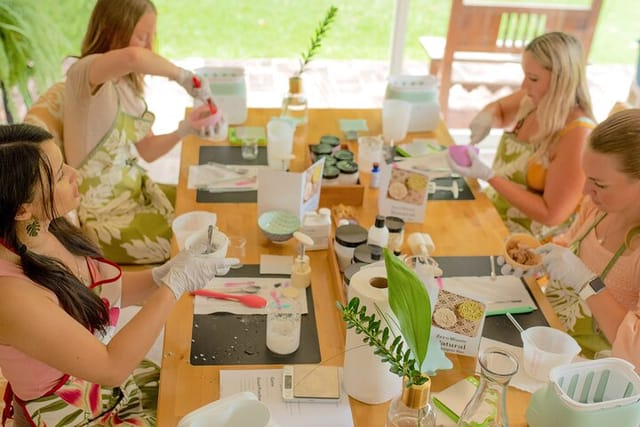
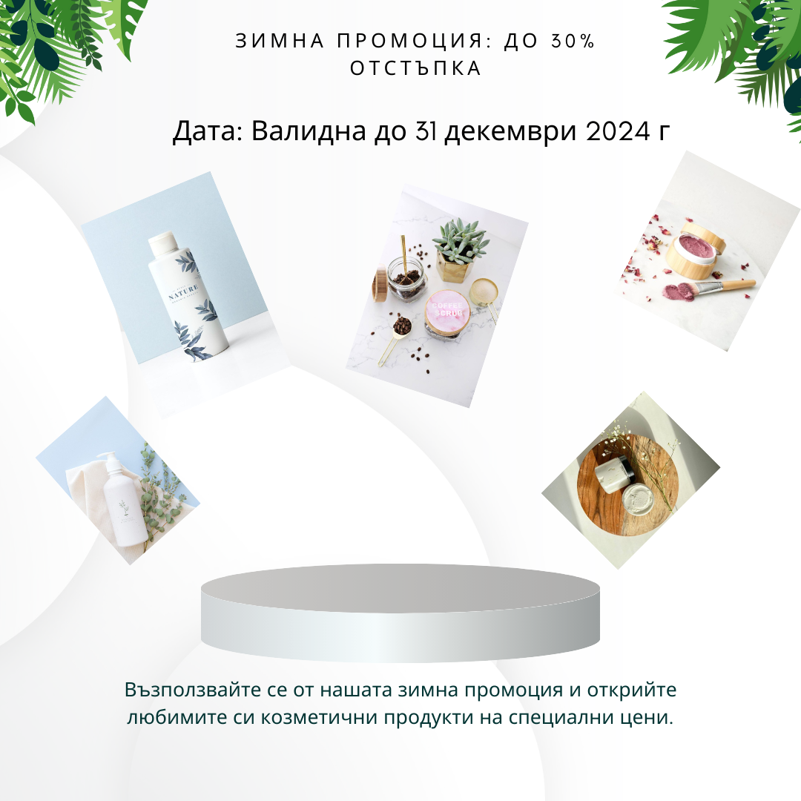

Вашето решение за здраве и красота
Дата: 25 ноември 2024 г.
Нашият билков крем за лице е създаден с грижа и внимание към всички нужди на кожата. Обогатен с органични екстракти от лайка, розмарин и лавандула, този крем осигурява дълбока хидратация и успокояваща грижа за чувствителната кожа. Леката текстура се абсорбира бързо, без да оставя мазен остатък, като оставя кожата свежа и гладка през целия ден.
Дата: 15 декември 2024 г.
Заповядайте на нашия семинар, където ще имате уникалната възможност да научите всичко за ползите от натуралната козметика и как тя може да бъде част от ежедневната грижа за вашата кожа и здраве. Нашите експерти ще споделят ценни съвети за избор на най-подходящите натурални продукти според типа кожа и индивидуалните ви нужди. Ще научите как да разпознавате качествени и безопасни съставки и как да създадете личен ритуал за грижа, който да подхранва и възстановява кожата ви по естествен начин.
Какво ще научите на семинара: Ползи от натуралната козметика: Защо натуралните продукти са по-безопасни и по-ефективни в сравнение с химическите алтернативи. Тайните на природните съставки: Как билки, масла и растения подхранват и защитават кожата. Как да изберете правилния продукт: Как да разберете кой продукт отговаря на нуждите на вашата кожа. Практически съвети за домашна грижа: Как да използвате натурална козметика в ежедневната грижа за лице и тяло.
Дата: Валидна до 31 декември 2024 г.
Възползвайте се от нашата зимна промоция и открийте любимите си козметични продукти на специални цени.